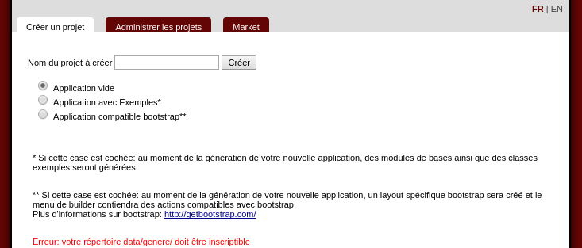
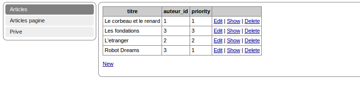

Tutorial to start
Needed
server apache2, php >= 5.2You should download
Rendez-vous on the website, clic on the download link "Download" .Uncompress the downloaded archive
Unpack the archive then move to your web directoryIt depends on your apache install
linux (/var/www or /usr/local/apache2/htdocs or /home/apache/htdocs)
windows (c:/wamp/www/)
mac osx (/MAMP/www)
Go to the interface
Open you browser on the URL where is installed the mkframework http://localhost/mkframework_v4_*_*The address depends on where is the framework...
Here you are
You have installed the framework or exactly the builder of the mkframeworkNow you can create a new website with one clic , it will be generate in the Projects/ directory

For imformation, the generated project doesn't inclure the mkframework library, it link it, to spare place.
The plugin directory, it is copied in every project: you can modify it.
note: if you want to centralize the plugin directory, you can change the directory configured in the file conf/site.ini.php
Configure the file conf/connexion.ini.php
When you open conf/connexion.ini.php (in your project in Projects/)*You can observe that there is some examples
mysql.dsn="mysql:dbname=blog;host=localhost"
mysql.sgbd=pdo_mysql
mysql.hostname=localhost
mysql.database=blog
mysql.username=root
mysql.password=root
If you generate with examples, you can see an article module, but where is the database ?
The article module (when you generate a new application with examples) is a xml database, it is saved in data/xml/base/article
A xml datable
- has a directory with the table name
- has a file structure.xml, which contains the table columns
- has a file max.xml which contains the maximum id.
The directory presentation
conf/
Contains configuration file, as you can see, the framework has many variable to configure if you want :)data/
Contains all ressources (pictures, cache, xml...)layout/
Contains the layouts: global website template where are display the viewmodel/
Contains your model class, one file by table, that contains two class model_mytable and row_mytableYou can have more details on the ORM page
module/
Contains the moduleA module:
- is a directory with the module name
- that contains a file main.php
- a directory view where there are views
plugin/
Contains your specific class and some tools classnote: you can observe some class like plugin_auth, plugin_routing that should be in framework.
But you can in this case, it is more flexible, you can modify a part of this process as(or if) you need.
Note 2: you can configure the class to use in the file conf/site.ini.php
public/
Public directory or your website the "web root public"It contains every public file (css, javascript) and the frontal index.php
Conclusion
As you can observe, this framework is very modular, you can lean to use it very quicklyYou have an article on developpez.com here:
http://php.developpez.com/index/redirect/14907/Presentation-du-mkframework-par-Imikado/